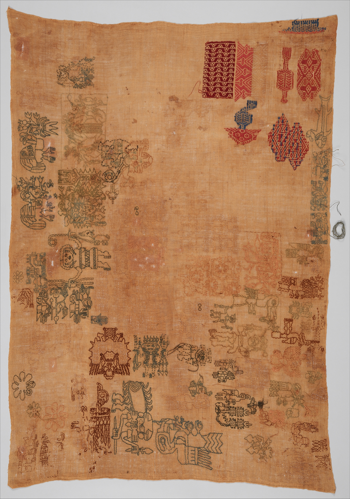
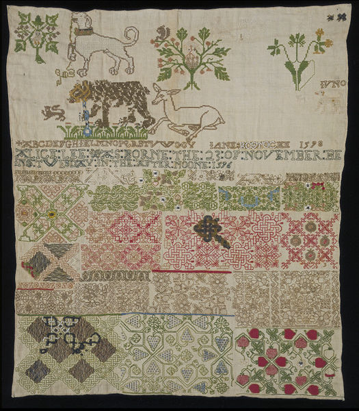

An Abridged History of Samplers
The earliest sampler [pictured left]...is a spot sampler...of the Nazca culture in Peru formerly in the Museum of Primitive Art, New York City. It is estimated to date from ca. 200 BCE–300 CE.
The oldest surviving European samplers were made in the 16th and 17th centuries. As there were few pre-printed patterns available for needleworkers, a stitched model was needed. Whenever a needlewoman saw a new and interesting example of a stitching pattern, she would quickly sew a small sample of it onto a piece of cloth - her 'sampler'. The patterns were sewn randomly onto the fabric as a reference for future use, and the woman would collect extra stitches and patterns throughout her lifetime.
The earliest British dated surviving sampler [pictured right]...was made by Jane Bostocke who included her name and the date 1598 in the inscription.
Samplers were mainly school exercises during the 18th and 19th centuries, and were almost entirely worked in cross stitch... These samplers were stitched more to demonstrate knowledge than to preserve skill...and girls were taught the art from a young age.
Text excerpts copied from Wikipedia Jan 14, 2017.Images link to their source.